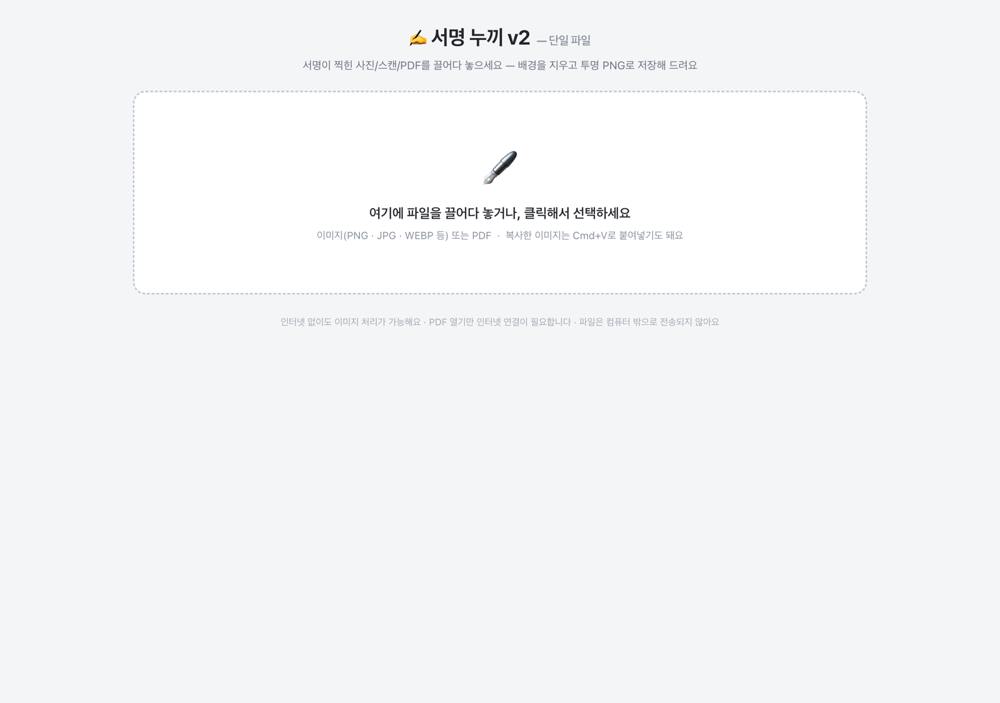
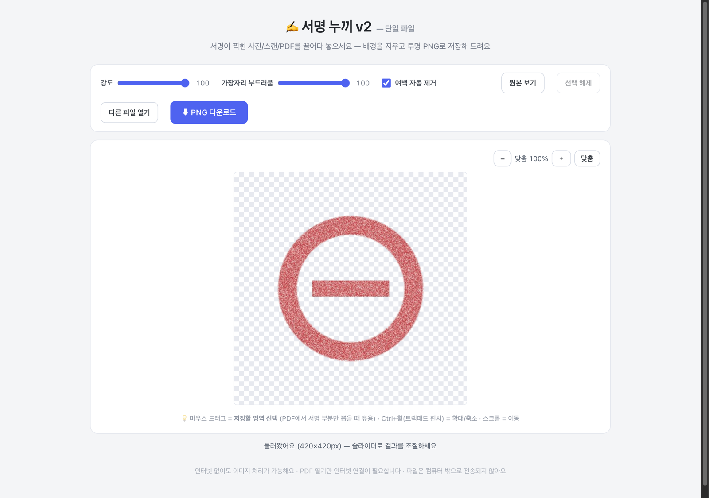
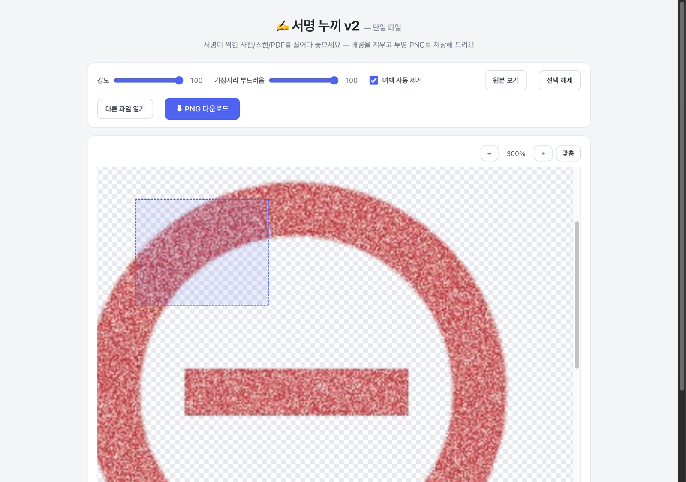
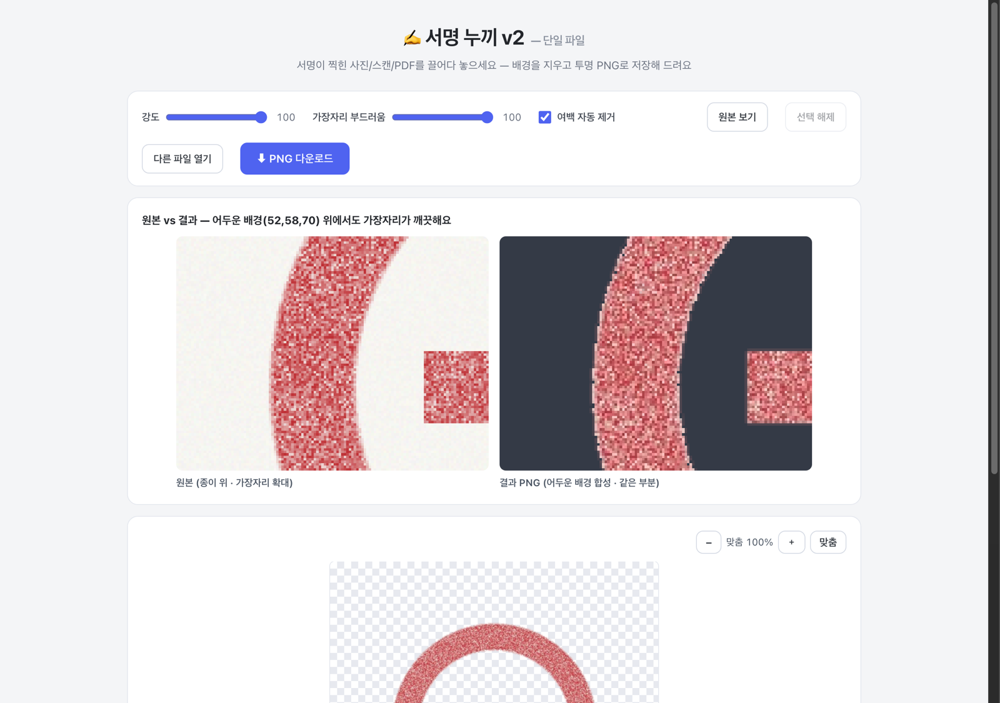

서명·도장이 찍힌 사진/스캔/PDF 한 개를 넣으면 됩니다. 다른 파일로 바꾸려면 [다른 파일 열기]를 누르세요.

넣자마자 배경이 지워진 결과가 보여요. 강도는 오른쪽으로 갈수록 옅은 잉크·도장 질감까지 살아나고, 가장자리 부드러움은 오른쪽으로 갈수록 테두리가 매끄러워집니다. 도장은 보통 둘 다 100이 제일 잘 나와요.

[+] 버튼이나 Ctrl+휠(트랙패드 핀치)로 확대하고, 마우스로 원하는 부분을 드래그하면 그 영역만 잘라서 저장돼요. 드래그를 안 하면 전체가 저장됩니다.

어두운 배경에 얹어도 테두리에 흰 잡티 없이 깨끗해요. 파일 이름은 원본명(누끼).png로 저장됩니다.
